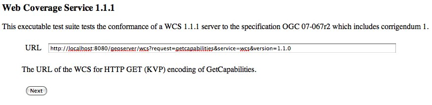
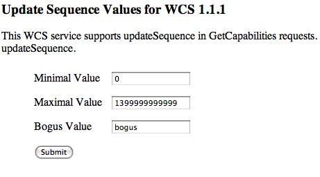

Cite Test Guide¶
A step by step guide to the GeoServer Compliance Interoperability Test Engine (CITE).
Contents
Check out CITE tools¶
The CITE tools are available at https://github.com/jdeolive/geoserver-cite-tools. The README file contains the most update documentation of how to checkout and build the tools. The quick version is:
git clone git://github.com/jdeolive/geoserver-cite-tools.git
cd geoserver-cite-tools
git submodule --init update
mvn clean install
Run WFS 1.0 tests¶
Note
Running WFS 1.0 tests require PostGIS to be installed on the system.
Create a PostGIS user named “cite”:
createuser cite
Create a PostGIS databased named “cite”, owned by the “cite” user:
createdb -T template_postgis -U cite cite
Change directory to the citewfs-1.0 data directory and execute the script cite_data.sql:
psql -U cite cite < cite_data.sql
Start GeoServer with the citewfs-1.0 data directory. Example:
cd <root of geoserver install> export GEOSERVER_DATA_DIR=<root of geoserver sources>/data/citewfs-1.0 ./bin/startup.sh
Change directory back to the cite tools and run the tests:
ant wfs-1.0
With the following parameters:
Capabilities URL
All tests included

Run WFS 1.1 tests¶
Note
Running WFS 1.1 tests require PostGIS to be installed on the system.
Create a PostGIS user named “cite”:
createuser cite
Create a PostGIS databased named “cite”, owned by the “cite” user:
createdb -T template_postgis -U cite cite
Change directory to the citewfs-1.1 data directory and execute the script dataset-sf0.sql:
psql -U cite cite < dataset-sf0.sql
Start GeoServer with the citewfs-1.1 data directory. Example:
cd <root of geoserver install> export GEOSERVER_DATA_DIR=<root of geoserver sources>/data/citewfs-1.1 ./bin/startup.sh
Change directory back to the cite tools and run the tests:
ant wfs-1.1
With the following parameters:
Capabilities URL
Supported Conformance Classes:
- Ensure WFS-Transaction is checked
- Ensure WFS-Xlink is unchecked
GML Simple Features: SF-0

Run WMS 1.1 tests¶
Start GeoServer with the citewms-1.1 data directory.
Change directory back to the cite tools and run the tests:
ant wms-1.1
With the following parameters:
Capabilities URL
UpdateSequence Values:
- Ensure Automatic is selected
- “2” for value that is lexically higher
- “0” for value that is lexically lower
Certification Profile : QUERYABLE
Optional Tests:
- Ensure Recommendation Support is checked
- Ensure GML FeatureInfo is checked
- Ensure Fees and Access Constraints is checked
- For BoundingBox Constraints ensure Either is selected
Click OK

Run WCS 1.1 tests¶
Start GeoServer with the citewcs-1.1 data directory.
Change directory back to the cite tools and run the tests:
ant wcs-1.1
With the following parameters:
Capabilities URL:
Click Next
Accept the default values and click Submit

Run WCS 1.0 tests¶
Warning
The WCS specification does not allow a cite compliant WCS 1.0 and 1.1 version to co-exist. To successfully run the WCS 1.0 cite tests the wms1_1-<VERSION>.jar must be removed from the geoserver WEB-INF/lib directory.
Remove the wcs1_1-<VERSION>.jar from WEB-INF/lib directory.
Start GeoServer with the citewcs-1.0 data directory.
Change directory back to the cite tools and run the tests:
ant wcs-1.0
With the following parameters:
Capabilities URL:
MIME Header Setup: “image/tiff”
Update Sequence Values:
- “2” for value that is lexically higher
- “0” for value that is lexically lower
Grid Resolutions:
- “0.1” for RESX
- “0.1” for RESY
Options:
- Ensure Verify that the server supports XML encoding is checked
- Ensure Verify that the server supports range set axis is checked
Schemas:
- Ensure that original schemas is selected
Click OK


Teamengine Web Application¶
The Teamengine web application is useful for analyzing results of a test run. To run the web application execute:
ant webapp
From the cite tools checkout. Once started the web app will be available at:
To run on a different port pass the -Dengine.port system property to ant command.